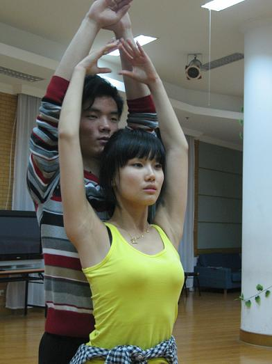
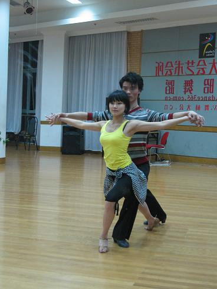
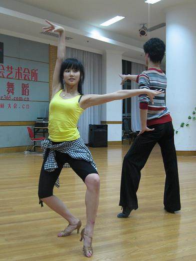
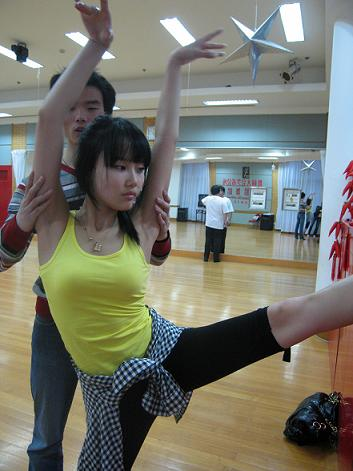
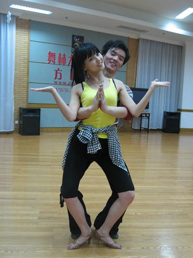
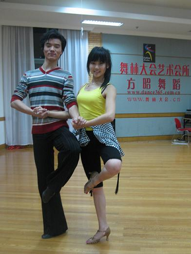

终于成为"舞林中人"拉,哈哈!,自从知道要参加舞林大会那天起,就兴奋紧张到不行了,兴奋是因为一直很喜欢拉丁舞,很想学,但总是没有机会和时间去学.紧张是因为听说这次和我一组的另外五位选手很厉害,都有舞蹈功底.这对我来说是很刺激很有挑战的一件事情,导致从第一天练舞开始,每天睡眠时间不超过5小时,因为太兴奋和紧张了,眼睛一闭起来,脑子里就会浮现出恰恰的音乐和自己在排练时候很不合格的舞蹈动作.一个多星期的时间我几乎没有心思去做别的事情,虽然每天日程排的超级满,白天要拍照,还要去外地,晚上才能赶回来练舞,所以我可怜的舞伴不得不每天被我拖到很晚,我真的恨不得把舞伴每天带在身边,每时每刻都陪我练习,我希望可以最到最好.的确有点辛苦,但是真的很开心,真的超级开心,跳舞实在太开心了.不管结果如何?!我觉得一定要很努力的去做,去享受过程,这样以后至少不会有遗憾!
谢谢每天看着我练舞每天都陪我到很晚的跟我一起吃盒饭的人,还有来探我班的人.谢谢大家!
最重要谢谢我的舞伴金刚和晴晴,晴晴是教我跳舞的女生,也是金刚的原配舞伴,哈哈!他们都比我小哦,晴晴都辛苦的发烧了呢!
金刚就是照片里的人,真的要谢谢他,那么辛苦,认真,和用心....陪我练习他腰都弄伤了...大家都没有白辛苦,昨晚舞林大会上,虽然表现没有我预计的好,但还是得到了评委的一点点鼓励和肯定,还有台下的铃铛们,谢谢你们又一次大老远的跑来为我打气,谢谢亲爱的铃铛们.结果评委给了我们最高分,第一名哦,好开心呀!我一定会更加努力的压腿和练舞的.大家继续为我加油吧!
昨晚的照片还没来得及传上了,先来几张练舞时候的照照...哈哈
ME和金刚





